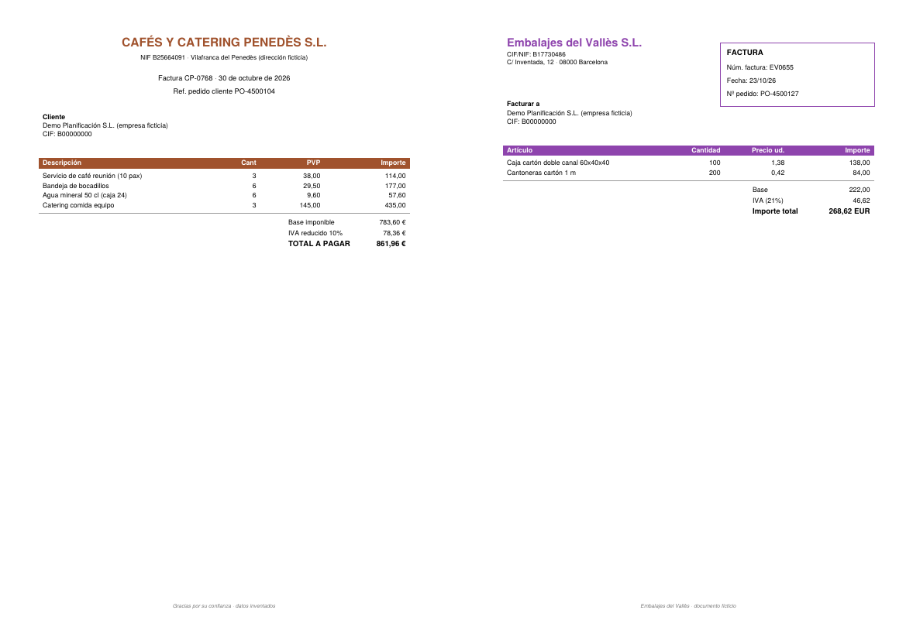

02
Lo que entra y lo que sale



Una carpeta con 50 facturas de 6 proveedores, cada uno con su formato, convertida en menos de un segundo en un Excel listo para contabilizar. Lo importante no es leer el PDF: es encontrar las que no cuadran antes de que entren en la contabilidad.
Le das la carpeta de facturas, el maestro de proveedores y los pedidos de compra. Devuelve un Excel con el registro de todas las facturas, los asientos contables con el debe y el haber cuadrados y una lista de las que hay que revisar, explicando por qué en lenguaje claro.
De las 50 facturas de prueba, 9 tienen algo raro escondido a propósito, y las encuentra todas:

No hay una plantilla por proveedor. Busca las etiquetas habituales (Base imponible,
Subtotal, Net amount, Cuota IVA, Retención IRPF…) y entiende
números y fechas en formato español e internacional: 1.234,56 y 1,234.56,
16/09/2026, 2026-09-16 o 30 de octubre de 2026.
Por su CIF/NIF contra el maestro de proveedores, que además dice a qué cuenta de gasto va cada uno (600 compras, 623 servicios profesionales, 624 transportes…).
Cuatro hojas: resumen, registro de facturas (las que hay que revisar, en rojo), asientos contables e incidencias. Los asientos incluyen gasto, IVA soportado, retenciones y proveedor, y la suma del debe y del haber se comprueba en los tests.
Factura clásica, cabecera de color, una en inglés con decimales con punto, una con recuadro, una de catering al 10 % y la de una autónoma con IRPF.
Nombres de archivo caóticos (scan_004.pdf, FW_factura_031.pdf…) y la misma factura repetida con otro nombre.
El generador guarda lo que debería salir de cada factura. Los tests comprueban los 50 documentos campo a campo y que se detectan las 9 incidencias, ni una más.
Cada incidencia dice qué falla con cifras: «Pedido 639,00 € · facturado 710,00 € (+71,00 €)». Nada de cajas negras.